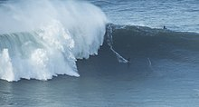

История
Сёрфинг возник в незапамятные времена в Полинезии. Впервые сёрфинг (гав. he‘e nalu) начали практиковать гавайцы. Для них это было и остаётся частью ритуалов. Они по сей день делают доски своими руками. Первые доски для сёрфинга были очень массивными и весили около 70 кг.
Европейцы впервые увидели его в 1767 году на Таити. Это произошло во время кругосветного плавания фрегата «Дельфин» под командованием Сэмуэла Уоллиса. По другой версии, первым был ботаник Джозеф Бэнкс 10 апреля 1796 года (также на Таити).
Марк Твен, посетивший Гавайи в 1866 году, записал:
В одном месте мы наткнулись на большую компанию голых туземцев обоих полов и всех возрастов, развлекающихся национальной забавой купания в прибое.
Джордж Фит (англ. George Freeth; 8 ноября 1883 — 7 апреля 1919) чаще других называется «отцом современного сёрфинга». Сам он тоже разделял это мнение.
Разновидности
Сёрфинг бывает следующих видов:
- Длинная доска — лонгборд (около 300 см).
- Короткая доска — шортборд (до 180 см).
- Сёрфинг на больших волнах — отдельное направление в сёрфинге в котором спортсмены ловят волны более 6 метров.
- Бодибординг — сёрфинг в положении лёжа на короткой мягкой доске.
- Бодисёрфинг (he‘e umauma) — в качестве глиссирующей поверхности используется тело сёрфера, короткие ласты на ногах и специальная перчатка на руке, дающая возможность поднять голову.
- сапсёрфинг (hoe he‘e nalu) — сёрфинг на специализированных досках (англ. stand-up paddle, сокр. SUP — отсюда название) в положении стоя с помощью весла.
В странах, далёких от океанских волн, существует такая альтернатива сёрфу, как вейксёрф. Вейкбордический катер на скорости около 16 км/ч создаёт волну высотой до 1 метра, сёрфер стартует за катером с фалом, а потом бросает её и продолжает движение за катером, как на классическом сёрфе.
Также существуют бассейны для сёрфинга с искусственными волнами (с контролируемыми параметрами высоты и скорости). Первый такой бассейн был построен в Японии.
См. также
- Скимборд
- Кайтсёрфинг
- Виндсёрфинг
- Сапсёрфинг (с веслом)
- Слипоны (лёгкие кеды без шнуровки)
- Калакауа (король Гавайских островов, возродивший сёрфинг)
- Гарретт Макнамара (американский профессиональный сёрфер)
- Сёрф-арт — стиль в искусстве
- Сёрф-рок — стиль музыки
- Крауд-сёрфинг — действие публики на концерте
- Сёрф-арт — направление в искусстве
Фильмы
Основная статья: Категория:
Фильмы о сёрфинге